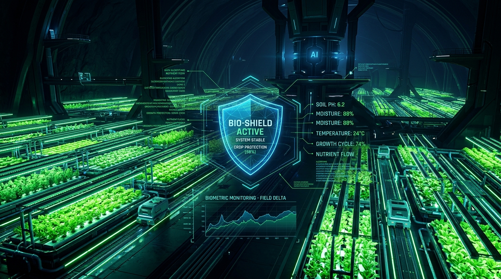
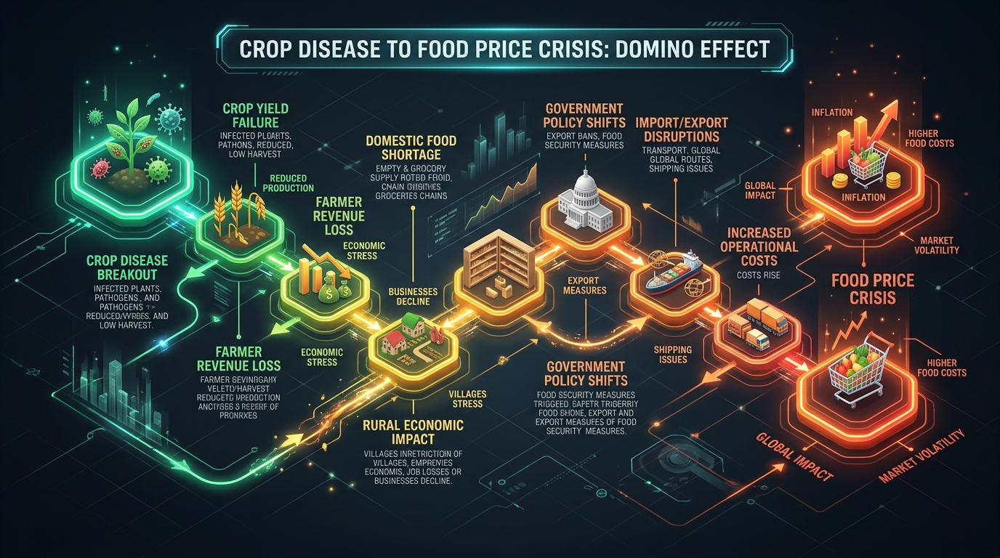
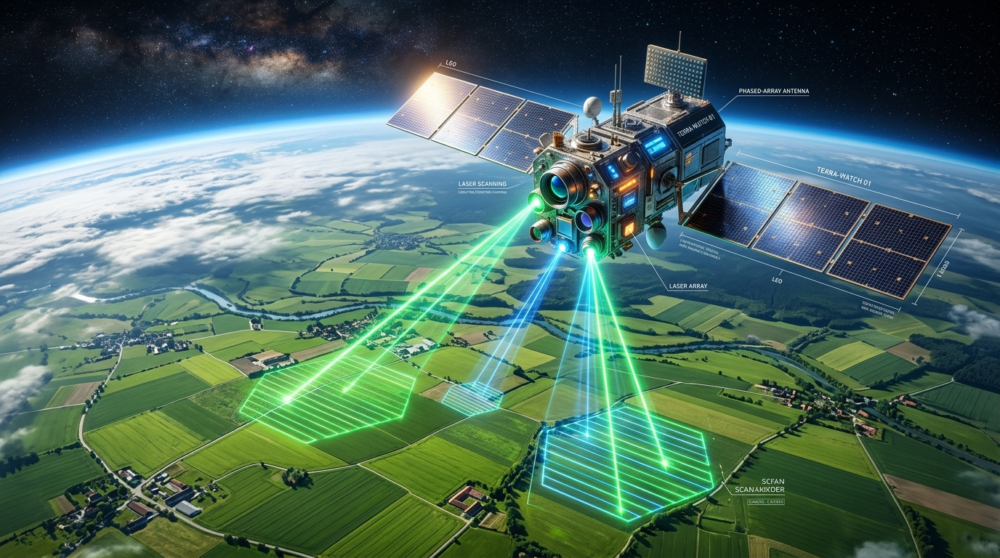
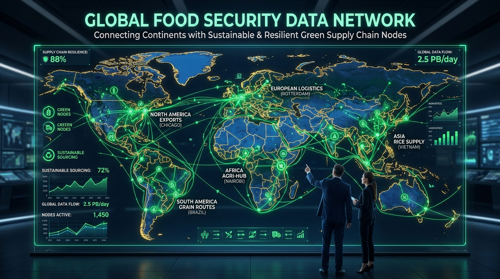

FoodShield AI
คาดการณ์ • ป้องกัน • ปกป้อง
"ระบบปัญญาประดิษฐ์สนับสนุนการตัดสินใจเพื่อคาดการณ์วิกฤตความมั่นคงทางอาหารและประเมินผลกระทบลูกคลื่นเชิงระบบก่อนเกิดความเสียหายรุนแรง"
👥 ชื่อทีม
กระเพราหมูกรอบ
⚡ เทคโนโลยีหลัก
Google Gemini LLM API & Glassmorphism Web Engine

โลกแห่งความตึงเครียดและห่วงโซ่อาหารล้มเหลว
🌍 โลกที่จินตนาการขึ้นมา
โลกในยุคที่สภาพอากาศผันผวนสุดขั้ว ปริมาณน้ำแปรปรวน และโรคพืชระบาดในวงกว้างอย่างรวดเร็ว
⚠️ สิ่งที่ล่มสลาย / เปลี่ยนแปลง
สายการผลิตพืชผลการเกษตรหลักล้มเหลว ส่งผลให้เกิดภาวะขาดแคลนวัตถุดิบอาหารสัตว์ และราคาอาหารในตลาดพุ่งสูงขึ้น
👥 ผู้ที่ได้รับผลกระทบ
เกษตรกร ผู้เลี้ยงปศุสัตว์ ชุมชนท้องถิ่นที่ขาดแคลนอาหาร และหน่วยงานตอบโต้ภัยพิบัติ

ปัญหาสำคัญและความท้าทายในปัจจุบัน
🎯 กลุ่มผู้ใช้งานหลัก (Target Users)
• เจ้าหน้าที่ส่งเสริมการเกษตรและผู้นำเครือข่ายฟาร์ม
• หน่วยงานวิเคราะห์ภัยพิบัติและนโยบายความมั่นคงทางอาหาร
⚡ ปัญหาที่กำลังพบและความสำคัญ
• ขาดการประเมินเชิงระบบ: AI แบบเดิมตรวจเฉพาะใบพืชในแปลงเดียว แต่ไม่สามารถประเมินผลกระทบต่อเนื่องถึงอาหารสัตว์และราคาตลาด
• สายเกินไปเมื่อเกิดวิกฤต: เมื่อราคาอาหารพุ่งสูงหรือเกิดภาวะขาดแคลนแล้ว การแก้ไขในตอนนั้นจะสายเกินไปและเสียค่าใช้จ่ายมหาศาล
FoodShield AI Platform — นวัตกรรมทางแก้ปัญหา
🛠️ สิ่งที่เราสร้างขึ้น
เว็บแอพพลิเคชันแบบจำลองความเสี่ยงเชิงระบบ (Systemic Risk Engine) ประมวลผลด้วย Gemini LLM
💡 วิธีการแก้ปัญหา & ฟังก์ชันหลัก
• คำนวณ Food Collapse Risk Index (0-100)
• สังเคราะห์แผนมาตรการ 3 ระยะ (0-48 ชม., 7 วัน, ระยะยาว)
• จำลองลำดับ Domino Effect Timeline 7 ขั้นตอน
• รองรับ Demo Scenario ใน 1 คลิก
ขั้นตอนการใช้งานและสาธิตระบบ (Live Demo)
🚀 ทดลองใช้งาน Prototype จริง
สามารถกดปุ่มเปิดเว็บแอปพลิเคชันเพื่อทดลองใช้ฟังก์ชันวิเคราะห์ได้ทันที
เปิดเว็บแอปพลิเคชัน (Launch App)การประยุกต์ใช้เทคโนโลยี AI (LLM API)
🤖 เทคโนโลยีที่เลือกใช้
Google Gemini LLM API (`gemini-2.5-flash` / Auto-Fallback)
📥 AI รับข้อมูลอะไร (Inputs)
พารามิเตอร์การเกษตรเชิงโครงสร้าง + ข้อความบรรยายบริบทพื้นที่จริง (Unstructured Field Notes)
⚙️ AI ทำหน้าที่อะไร & นำผลลัพธ์ไปใช้อย่างไร
วิเคราะห์ความเชื่อมโยงเชิงระบบ คำนวณคะแนนความเสี่ยง สังเคราะห์แผนมาตรการ 3 ระยะ และจัดลำดับ Domino Timeline คืนค่าเป็น JSON
💡 เหตุใดจึงเลือก LLM API ชนิดนี้?
• Reasoning Capability: LLM สามารถทำความเข้าใจบริบทเชื่อมโยงระหว่างพืช ปศุสัตว์ และเศรษฐกิจ ซึ่ง AI ตรวจภาพธรรมดาไม่สามารถทำได้
• Natural Language Synthesis: สังเคราะห์แผนคำแนะนำภาษาไทยสละสลวย เข้าใจง่าย พร้อมนำไปปฏิบัติจริง
• JSON Structured Output: บังคับรูปแบบข้อมูล JSON เพื่อเชื่อมต่อกับ UI ไดนามิกได้อย่างแม่นยำ
ผลกระทบและประโยชน์ของโครงการ (Impact)
👤 ผลกระทบต่อส่วนบุคคล (Individuals)
• เกษตรกรได้รับการแจ้งเตือนและมาตรการรับมือล่วงหน้าใน 0-48 ชั่วโมง
• ผู้เลี้ยงปศุสัตว์สามารถวางแผนสำรองอาหารสัตว์ทดแทนได้ทันเวลา
• ชุมชนลดความเสี่ยงจากการขาดแคลนอาหารสด
🌐 ผลกระทบต่อส่วนรวม (Society & System)
• ยับยั้งภาวะเงินเฟ้อราคาอาหารและป้องกันห่วงโซ่อุปทานล้มเหลว
• ช่วยให้หน่วยงานภาครัฐจัดสรรงบประมาณเยียวยาและมาตรการป้องดันได้ตรงจุด
• สร้างความยืดหยุ่นทางระบบนิเวศและการเกษตรยั่งยืน
ข้อจำกัดและแผนการต่อยอดในอนาคต

📡 Earth Observation Satellite
ก้าวข้ามข้อจำกัด Manual Input โดยเชื่อมต่อดัชนี NDVI จากดาวเทียม Sentinel-2 และ MODIS แบบอัตโนมัติ

🌐 FAO & WFP Live Index
ดึงสถิติราคาอาหารโลกจาก FAO และแผนที่ความอดอยาก WFP HungerMap API เข้าสู่ระบบ AI
🗺️ GIS Regional Risk Map
พัฒนาแผนที่ความร้อน GIS แสดงระดับความเสี่ยงความมั่นคงทางอาหารแยกตามจังหวัดเพื่อนำไปใช้จริงในระดับนโยบาย
สมาชิกทีม: กระเพราหมูกรอบ
โครงการ FoodShield AI
เกื้อคุณ อ่าวสกุล
(อาร์ตี้)
หน้าที่ Leader
ภาคิน สิงหชัย
(ภูผา)
หน้าที่โค้ด
สุธิภัทร ส่งสว่าง
(ใบพลู)
หน้าที่หาข้อมูล
ปุณญิศา พงษ์ศาศวัต
(ปันปัน)
หน้าที่สไลด์
พศิกา นิตยภักดี
(มิ้ม)
หน้าที่สไลด์